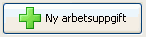
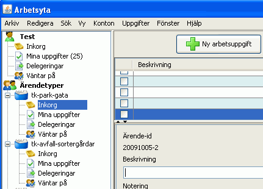

Om du vill lägga till en ny arbetsuppgift klickar du på knappen Ny arbetsuppgift i verktygslisten i Arbetsytan. Arbetsuppgiften skapas i din personliga Inkorg eller i en Ärendetyps Inkorg beroende på vad du markerat i Vänsterpanelen. I bilden nedan har ett nytt ärende skapats i Inkorgen för Ärendetypen tk-park-gata.
